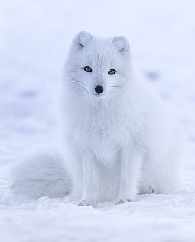
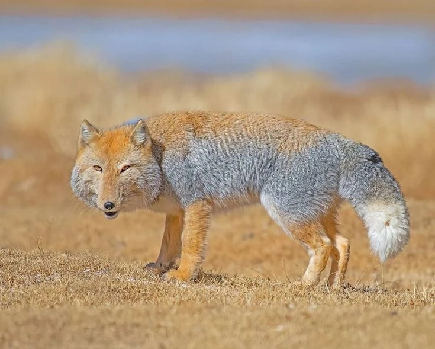

Known by many names, including the Simien fox, the Ethiopian wolf belongs to the Canis genus. Home to southeastern Ethiopia mountain ranges, the Ethiopian wolf s a highly specialised feeder of Afroalpine rodents. It is one of the world's rarest canids, and Africa's most endangered carnivore.
The crab-eating fox is also known as the forest fox, wood fox, or maikong. Belonging to the genus Cerdocyon, and is not closely related to true foxes. Found in the central part of South Africa, the Crab-eating fox as it's name suggests enjoys eating crabs during the wet season. But as an opportunist and an omnivore, insects or meat from rodents and birds are eaten when available.
The Pampas Fox is another "false" fox. As it's name suggests, it is native to South America's Pampa, which are low grasslands. It is part of the genus Lycalopex, with others like the Culpeo fox and Hoary fox. Pampas foxes are more omnivorous than most other canids, and have a varied and opportunistic diet.
The hoary fox or hoary zorro, another member of the genus Lycalopex, also known as raposinha-do-campo in Brazil (Portuguese for "little fox of the meadow"). Unlike many other foxes, it feeds primarily on small invertebrates such as insects. The small size of the hoary fox makes it an agile and fast-running animal, while its relatively weak teeth adapt it to feeding on invertebrates, rather than larger prey.
Found in the African savanna, the Bat-eared fox is the only extant species of the genus Otcyon. It's large ears play a role in thermoregulation in the semi-arid regions it resides in. Bat-eared foxes are considered the only truly insectivorous canid, with a marked preference for harvester termites which can constitute 80-90% of its diet.
The Gray fox is one of three belonging to the genus Urocyon. Once the most common fox in the Eastern United States, human advancement and deforestation allowed the red fox to become the predominant fox-like canid. It is the only canid whose natural range spans both North and South America. In regions where gray foxes and coyotes hunt for the same food, the gray fox has been observed to give space to the coyote, staying within its own established range for hunting.
The Island fox, is also a member of the genus Urocyon. It is a small fox species that is endemic to six of the eight Channel Islands of California. There are six subspecies, each unique to the island it lives on, reflecting its evolutionary history. They are generally docile, show little fear of humans, and are easily tamed. The island fox eats fruits, insects, birds, eggs, land snails, crabs, lizards, amphibians, and small mammals, including deer mice.
Member of the extinct genus Dusicyon, The Falkland Islands wolf also known as the warrah was the only native land mammal of the Falkland Islands. When Charles Darwin visited the islands in 1833 he found the species present in both West and East Falkland and tame. However, at the time of his visit the animal was already very rare on East Falkland, and even on West Falkland its numbers were declining rapidly. Around 1880, the animal had become extinct.

A small species of fox native to the Arctic region, the Arctic fox is well adpated to the cold enviroments because of its thick, warm fur that also doubles as camouflage. In the wild, most individuals do not live past their first year but some exceptional ones survive up to 11 years. Preying on many small creatures such as lemmings, voles, ringed seal pups, fish, waterfowl, and seabirds. It also eats carrion, berries, seaweed, and insects and other small invertebrates.
The Bengal fox, also known as the Indian fox, resides in the Indian subcontinent from the Himalayan foothills and Terai of Nepal through southern India, and from southern and eastern Pakistan to eastern India and southeastern Bangladesh. Bengal foxes are omnivorous and opportunistic feeders; orthopterans, termites, ants, beetles, spiders, soft-furred rats, Indian field mice, Indian gerbils, Indian mynahs, grey partridges and ashy-crowned finch larks are commonly found in their diet.
Blanford's fox, named after the English naturalist William Thomas Blanford, is a small fox native to the Middle East and Central Asia. This fox has an ability to climb rocks, jumping to ledges 3 m (9.8 ft) above them with ease, and as part of their regular movements and climbing vertical, crumbling cliffs by a series of jumps up vertical sections. Blanford's foxes are omnivorous and primarily insectivorous and frugivorous. Unlike other fox species, it seldom caches food.
The Cape fox is a small species of fox, native to southern Africa. It is also called a South African version of a fennec fox due to its similarly big ears. It is the only "true fox" occurring in sub-Saharan Africa. Cape foxes are completely omnivorous and opportunists, feeding mainly on small mammals (such as rodents) and insects, but also commonly eating birds, small reptiles, carrion and fruits.
The corsac fox, is a medium-sized fox found in steppes, semi-deserts and deserts in Central Asia, ranging into Mongolia and northern China. As an adaption to the arid climate in which they live, corsac foxes can forego food and water for extended periods of time. Although predominantly carnivorous, it occasionally eats fruit and other vegetation, especially during winter when availability of animal prey is low.
The fennec fox is a small crepuscular fox native to the deserts of North Africa, ranging from Western Sahara and Mauritania to the Sinai Peninsula. Its most distinctive feature is its unusually large ears, which serve to dissipate heat and listen for underground prey. The fennec is the smallest fox species. Omnivorous, it feeds on small rodents, lizards, small birds and their eggs, insects, fruits, leaves, roots and also some tubers. It relies on the moisture content of prey, but drinks water when available.
The kit fox, found in arid and semi-arid regions of the southwestern United States and northern and central Mexico, stands as the smallest among the four Vulpes species in North America and ranks among the smallest vulpines globally. Notably recognized for its diminutive stature, it has earned comparisons to the fennec fox, particularly for its prominent ears. Kit foxes are not exceptionally territorial, preferring to live in pairs or small groups of relatives. They are opportunistic omnivores and scavengers, but primarily carnivorous.
One of the least studied of all canid species, in part due to its remote habitat and its sandy coat that blends in well with the desert-like terrain, the pale fox is a species of fox found in the band of African Sahel from Senegal in the west to Sudan in the east. It has the ability to retain water from its food, and can go almost completely without drinking. Although the abundance of the pale fox is unknown, it seems to be a common species throughout its wide range.
Named after the German naturalist Eduard Rüppell, Rüppell's fox, is a fox species living in desert and semi-desert regions of North Africa, the Middle East, and southwestern Asia. They use two different types of burrows, which are strictly separated: the breeding dens and the resting dens. Rüppell's foxes are omnivores, with a diet that varies considerably depending on what is locally available.
The red fox is the largest of the true foxes and one of the most widely distributed being present across the entire Northern Hemisphere including most of North America, Europe and Asia, plus parts of North Africa. Due to its presence in Australia, it is included on the list of the "world's 100 worst invasive species". Red foxes also have various color morphs, often seen when they are bred for use of their fur; cross, silver, platinum, and amber are some examples.
The swift fox is around the size of a domestic cat found in the western grasslands of North America, such as Montana, Colorado, New Mexico, Kansas, Oklahoma and Texas. It also lives in southern Manitoba, Saskatchewan and Alberta in Canada. It became nearly extinct in the 1930s as a result of predator control programs, but was successfully reintroduced later. Like most foxes, the swift fox is an omnivore. Rabbits, mice, ground squirrels, birds, insects, other arthropods, lizards, amphibians, fish and eggs are staples.

The Tibetan fox, also known as the Tibetan sand fox, is a species of true fox endemic to the high Tibetan Plateau, Ladakh plateau, Nepal, China, Sikkim, and Bhutan, up to elevations of about 5,300 m (17,400 ft). The Tibetan fox primarily preys on plateau pikas, followed by rodents, marmots, woolly hares, rabbits, small ground birds and lizards. Tibetan foxes may form commensal relationships with brown bears during hunts for pikas. The bears dig out the pikas, and the foxes grab them when they escape the bears.


.jpg)